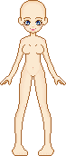

My Bases
I drew these bases. If you want to use them to make dolls to display, please credit me on the same page you display your doll. You can recolor these all you want to get different skin and eye colors.
'Poppa' Base

'Precious' Base